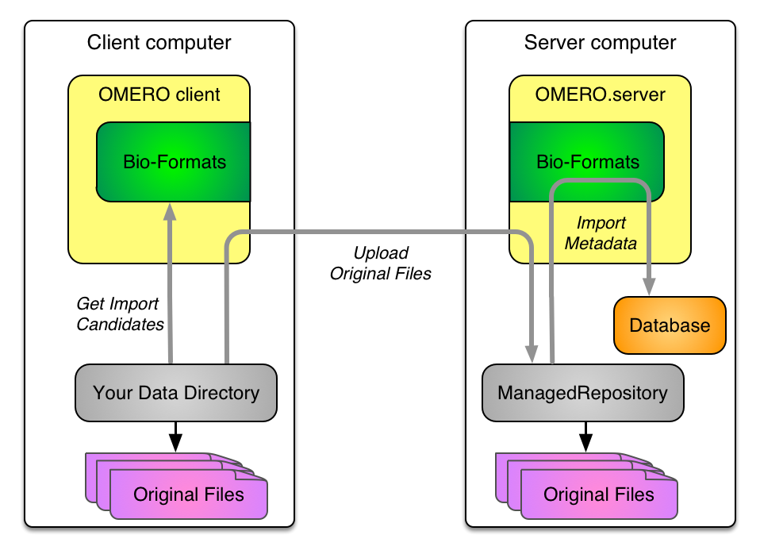
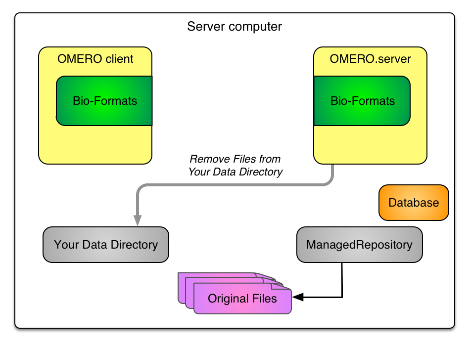

Extending Imports in OMERO 5
Dundee
The Paris of the North
June 2016
Colin Blackburn, Mark Carroll & Josh Moore
Outline
- Review of import in OMERO 5
- Transfers
- Excludes
- Targets
Review of import in OMERO 5
A very quick reminder...
- ManagedRepository
- Filesets
- Basic OMERO 5 Import
ManagedRepository

Filesets

OMERO 5 Import
OMERO 5 Data out

Transfers
- An example
- What's available?
- Extension point
Example: hard link & import ...
omero import path/to/image -- --transfer=ln_rm

Example: ... then delete
omero import path/to/image -- --transfer=ln_rm

Transfers: What's available?
- upload & import (the default)
- upload, import then delete original files
- copy & import
- copy, import then delete original files
- hard link & import
- hard link, import then delete original files
- soft link (symlink) & import
Use cases
- Upload
- data on separate system
- remote import
- Copy
- data on same system, lower network overhead
- Hard link
- very large data on OMERO server
- Soft link
- DropBox on OMERO server
Transfers: CLI summary
omero import --advanced-help
--transfer=ARG File transfer method
General options:
upload # Default
upload_rm # Caution! Upload followed by source deletion.
some.class.Name # Use a class on the CLASSPATH.
Server-side options:
cp # Use local copy command.
cp_rm # Caution! Copy followed by source deletion.
ln # Use hard-link.
ln_rm # Caution! Hard-link followed by source deletion.
ln_s # Use soft-link.
e.g. omero import -- --transfer=ln_s foo.tiff
./importer-cli --transfer=ln bar.tiff
Extending transfers
Create a subclass of AbstractFileTransfer then
omero import -- --transfer=my.new.Transfer foo.tiff
Excluding imports
- What's available?
- Extension points
Excluding duplicates
omero import --advanced-help
File exclusion:
---------------
--exclude=filename Exclude files based on filename.
--exclude=clientpath Exclude files based on the original path.
e.g. omero import -- --exclude=filename foo.tiff # First-time imports
omero import -- --exclude=filename foo.tiff # Second-time skips
Extending excludes
Create a subclass of AbstractFileExclusion then
omero import -- --exclude=my.new.Exclusion foo.tiff
Import targets
- Legacy targets
- What's available?
- Extension points
Legacy targets
omero import --help
-d DATASET_ID OMERO dataset ID to import image into
-r SCREEN_ID OMERO screen ID to import plate into
New import targets
omero import --help
-d DATASET_ID OMERO dataset ID to import image into
-r SCREEN_ID OMERO screen ID to import plate into
-T TARGET, --target TARGET OMERO target specification
Format
omero FILE -T <action or Class>[:<discriminator>]:<pattern>
What's available
-
Classes & actions:
- Dataset
- Screen
- regex
- user defined class
-
Discriminators:
- id
- name
- can be implicit
Dataset & id
Not so interesting
# use the Dataset with id=2
omero import ~/images/dv/SMN10ul03_R3D_D3D.dv -T Dataset:id:2
# use the Dataset with id=2, here the discriminator is implicit
omero import ~/images/dv/SMN10ul03_R3D_D3D.dv -T Dataset:2
# both of these are equivalent to the legacy target '-d'
omero import ~/images/dv/SMN10ul03_R3D_D3D.dv -d 2
The same syntax applies to Screen & id
Dataset & name
A bit more interesting
omero import ~/images/dv/SMN10ul03_R3D_D3D.dv -T Dataset:name:Sample01
This will import the image into the Dataset named 'Sample01'.
If no Dataset exists with that name a new one will be created.
The same syntax applies to Screen & name
Multiple targets
-
Qualifying discriminators
- + most recent
- - oldest
- % unique
- @ create new regardless
Dataset & name
A bit more interesting
# use the most recent Dataset named 'Samples'
omero import ~/images/dv/SMN10ul03_R3D_D3D.dv -T Dataset:+name:Samples
# use the oldest Dataset named 'Samples'
omero import ~/images/dv/SMN10ul03_R3D_D3D.dv -T Dataset:-name:Samples
# use the Dataset named 'Samples' only if it is unique
omero import ~/images/dv/SMN10ul03_R3D_D3D.dv -T Dataset:%name:Samples
# create a new Dataset named 'Samples' even if one already exists
omero import ~/images/dv/SMN10ul03_R3D_D3D.dv -T Dataset:@name:Samples
The same syntax applies to Screen & name
Regular expressions
A lot more interesting
omero import ~/images/dv/SMN10ul03_R3D_D3D.dv -T "regex:name:^.*images/(?<Container1>.*?)"
This will import the image into the Dataset called 'dv', resolved by <Container1>.
If no Dataset exists with that name a new one will be created.
The same syntax applies to Screen & name
Regular expressions
A lot more interesting
# use the most recent Dataset named 'dv'
omero import ~/images/dv/SMN10ul03_R3D_D3D.dv -T "regex:+name:^.*images/(?<Container1>.*?)"
# use the oldest Dataset named 'dv'
omero import ~/images/dv/SMN10ul03_R3D_D3D.dv -T "regex:-name:^.*images/(?<Container1>.*?)"
# use the Dataset named 'dv' only if it is unique
omero import ~/images/dv/SMN10ul03_R3D_D3D.dv -T "regex:%name:^.*images/(?<Container1>.*?)"
# create a new Dataset named 'dv' even if one already exists
omero import ~/images/dv/SMN10ul03_R3D_D3D.dv -T "regex:@name:^.*images/(?<Container1>.*?)"
Regular expressions
Implicit parts
# use the most recent Dataset named 'dv' explicitly
omero import ~/images/dv/SMN10ul03_R3D_D3D.dv -T "regex:+name:^.*images/(?<Container1>.*?)"
# use the Dataset named 'dv', most recent is implicit
omero import ~/images/dv/SMN10ul03_R3D_D3D.dv -T "regex:name:^.*images/(?<Container1>.*?)"
# use the Dataset named 'dv', most recent name is implicit
omero import ~/images/dv/SMN10ul03_R3D_D3D.dv -T "regex:^.*images/(?<Container1>.*?)"
# use the Dataset named 'dv', use of regex and the most recent name is implicit
omero import ~/images/dv/SMN10ul03_R3D_D3D.dv -T ":^.*images/(?<Container1>.*?)"
Regular expressions
A further example
Given a series of plates in the following directories
~/images/bd-pathway/week-1/2015-12-01_000/ ~/images/bd-pathway/week-2/2015-12-09_000/ ~/images/bd-pathway/week-2/2015-12-11_000/
then
omero import ~/images/bd-pathway/ -T "regex:+name:^.*bd-pathway/(?<Container1>[^/]*)/.*"
will resolve to using two Screens 'week-1' and 'week-2' for the import targets.
Extending targets
Create a class which implements AbstractFileTransfer then
omero import foo.tiff --target=my.new.Target
More on Imports
Thanks!
- the "import team"
- the OME team
- the user community